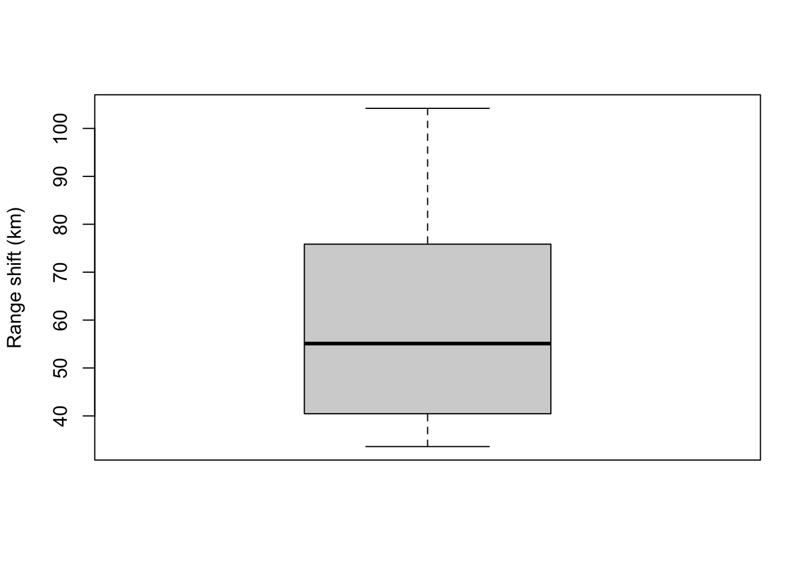

t-tests
Ben Miner and Matthew Zinkgraf
2022-09-21
t-tests
There are 3 types of t-tests that are commonly used in biology: one-sample t-test, two-sample t-test, and paired t-test. They are all very similar, so we will start with a one-sample t-test in detail and contrast the other two t-tests with the one-sample t-test.
1 Null and alternative hypotheses
Researchers have the ability to test one- or two-sided hypotheses with t-tests because the null t distribution has two tails. This means that the null and alternative statistical hypotheses will depend on the biological hypotheses. For two sided-biological hypotheses (i.e., you only care whether the means are different), you will want to use a two-tailed t-test. The null and alternative statistical hypotheses for a two-tail test are always as follows.
- Null hypothesis: true population means are equal, or \(\mu_1 = \mu_2\)
- Alternative hypothesis: true popoulation means are not equal, or \(\mu_1 \neq \mu_2\)
If your hypotheses are one-sided, then you will want to use a one-tailed t-test. There are two options for the statistical hypotheses of a one-tailed t-test.
- Null hypothesis: true population mean of group 1 is equal or less than the true population mean of group 2, or \(\mu_1 \leq \mu_2\)
- Alternative hypothesis: true population mean of group 1 is greater than the true population mean of group 2, or \(\mu_1 > \mu_2\)
In this case, you are only interested in the right-hand tail (also referred to as the positive tail) of the t distribution.
The second option is just the opposite of first option.
- Null hypothesis: true population mean of group 1 is equal or greater than the true population mean of group 2, or \(\mu_1 \geq \mu_2\)
- Alternative hypothesis: true population mean of group 1 is less than the true population mean of group 2, or \(\mu_1 < \mu_2\)
In this case, you are only interested in the left-hand tail (also referred to as the negative tail) of the t distribution.
It is important that you logically match you biological and statistical hypotheses.
One-sample t-test example
You use the one-sample t-test when you have one continuous variable (your sample), and you want to test whether the mean of your sample differs (or is similar) to another mean. This other mean, referred to as μ, can be any number from - infinity to infinity, though it is often zero because of the common questions asked by researchers.
2 Data format
The data for a one-sample t-test can be entered into Excel as a single column, and read into R with the function read.csv(). The function file.choose() opens a window so you can select the file you want to read in. Of course you can also set the working directory and provide the file name. Alternatively, you can just enter the data into R directly by creating a vector. Below are the two ways. Download an Excel file that you can save and then read into R.
tData1 <- read.csv(file.choose())
#Remember this reads in a data.frame, so use the $ with the name of the column to extract the datatData2 <- c(18.2, 23.3, 19.0, 45.4, 12.6, 23.8, 34.0, 29.6) #This is a vector3 Range shifts due to climate change
Chen et al. (2011) published an article in Science in which they tested whether species ranges have changed due to climate change. They looked through the published literature for papers that measured the changes in species ranges. They then analyzed this collection of data, which is called a meta analysis. They used a one-sample t-test to determine whether the average shift in ranges was greater or less than predicted from a previous analysis. We are going to analyze a subset of the data for insects. The data are the latitudinal shifts in kilometers, and positive values indicate a shift away from the equator.
Here are the data: 72.9, 40.9, 36.7, 64.2, 104.2, 33.6, 55.1, 44.3, 40.0, 91.1, 78.8
Notice that all species shifted their range torward the poles.
Enter the data into R (any method is fine).
We will test whether there is evidence for a poleward shift in the range of of species. This is a one-sided hypothesis because we only care about whether the average increased (i.e., is greater than zero). We use a mu of zero because we would expect an average shift of zero if insects have not shifted their distributions. t-tests allow us to directly test one-sided hypotheses with a one-tail test.
- Null hypothesis: true population mean is equal or less than 0, or \(\mu_1 \leq 0\)
- Alternative hypothesis: true population mean is greater than 0, or \(\mu_1 > 0\)
4 By hand
4.1 Test statistic
The test statistic for all t-tests is the t-value. However, we calculate the t-value slightly different for one-sample, two-sample, and two-sample, paired t-tests. For a one-sampled t-test, you subtract the mean you are comparing your sample to (i.e., μ) from the mean of your sample. You then divide by the standard error of your sample. This standardizes the data to a mean of zero and a standard deviation of 1 (remember that standard error is the standard deviation of the distribution of means). You can think of the t-value as the distance of your sample mean from μ standardized to one standard deviation. Below is the equation of the the t value for a one-sample t-test.
\[t = \frac{\bar{X} - \mu}{s_\bar{X}}\]
So, let’s calculate the mean and standard error for the data, and then calculate the t-value.
rangeData <- c(72.9, 40.9, 36.7, 64.2, 104.2, 33.6, 55.1, 44.3, 40.0, 91.1, 78.8)
meanRangeData <- mean(rangeData)
seRangeData <- sd(rangeData)/sqrt(length(rangeData))
(tRangeData <- (meanRangeData - 0)/seRangeData)## [1] 8.3335814.2 t distribution and P-values
You use the t distribution to convert the t-value to a P-value. The t-distribution, looks a lot like a normal distribution but is leptokurtic, which means that the tails are a bit fatter and the peak is a bit lower than the standard normal distribution. This is because the standard error is a poor estimate of the standard deviation of the distribution of means when the sample size is small. Both distributions, t and standard normal, have a mean of zero and a standard deviation of one.
The shape of the t distribution (i.e., how leptokurtic) is determined by the degrees of freedom. As the degrees of freedom increase, the distribution becomes less leptokurtic and more similar to the standard normal distribution. Below is the code you can compare the t distribution to a standard normal distribution and explore what happens when you change the degrees of freedom.
curve(dnorm(x), -10, 10, ylab = "Density")
curve(dt(x, 1), add = T, col = "palegreen4")
curve(dt(x, 5), add = T, col = "palegreen3")
curve(dt(x, 10), add = T, col = "palegreen2")All t-tests can be 1- or 2-tails, which correspond with a 1- or 2-sided hypotheses, respectively. For a 2-tailed test, you need to determine the probability of getting a value more extreme than your test statistic. For example, if your t-value was 3, then you need to calculate the probability of getting a value of 3 or greater or a value of -3 or less (i.e., more extreme). If you had a test statistic that was -2.1, then you need to calculated the probability of getting value of -2.1 or less or 2.1 or greater. Because the distribution is symetrical, the probability of getting a value of -2.1 or less is the same as getting a value of 2.1 or greater. So, most people just determine the probability of getting a negative t-value, and then multiplying it by 2. Below is some code to illustrate this point.
#Prob 1.4 or greater (i.e., the right tail) with 10 degrees of freedom
1-pt(1.4, 10)## [1] 0.09588268#Prob for -1.4 or less (i.e., the left tail)
#See how they are the same!
pt(-1.4, 10)## [1] 0.09588268#Calculate the P-value for a 2-tailed test
pt(-1.4, 10) + (1 - pt(1.4, 10))## [1] 0.1917654#Or
2*pt(-1.4, 10)## [1] 0.1917654curve(dt(x, 10), -10, 10, ylab = "Density")
abline(v = c(-1.4, 1.4), col = "palegreen2")
text(c(-1.4, 1.4), 0.3, c("-1.4", "1.4"), pos = c(2,4), col = "palegreen2")
For a one-tailed t-test, it is important to know which tail you want. To do this, you need to think about the statistical and biological hypotheses. I find it easiest to look at the alternative hypothesis. If it states that the mean of the sample should be greater than μ, then you look up the right-hand (or positive) tail. If it states that the mean of the sample should be less than μ, then you look up the left-hand (or negative) tail. As you might have guessed, you calculate the P-value from only one tail.
#Assume our t value is 2.9 with 35 degrees of freedom, and we expect our the mean of our sample to be greater than mu
1-pt(2.9, 35)## [1] 0.003203703Students get confused when they do not carefully think about which tail to use. Remember it doesn’t depend on the t-value at all, it depends on the alternative hypothesis. So, let’s say you have a t-value of -3.6 with 5 degrees of freedom, and your alternative hypothesis is that the mean of your sample is greater than μ. Therefore you are after the right-hand tail. The P-value will be large (> 0.5) because the value is negative but we are after the right-hand tail.
#Assume our t value is -3.6 with 5 degrees of freedom, and you are after the right-hand tail.
1-pt(-3.6, 5)## [1] 0.9922284curve(dt(x, 5), -10, 10)
abline(v = -3.6)
text(-3.6, 0.2, "t value", pos = 2)
#Don't worry about the polygon function
polygon(c(seq(-3.6, 10), seq(10, -3.6, by = -0.1)), c(rep(0, length.out = 14), dt(seq(10, -3.6, by = -0.1), 5)), col = "steelblue")Now let’s determine the P-value for our example of range shifts in insects. Recall that we expected to see a positive shift in the range, which means that ranges shifted torwards the poles. We set μ equal to zero, because we want to determine whether the mean of the sample is greater than μ, and thus we are after the right-hand (or positive) tail.
1-pt(tRangeData, length(rangeData)-1)## [1] 4.109268e-06Is this value greater or less than alpha? What do you conclude?
5 t.test()
We can use the function t.test() to analyze data with t-test. This function will perform the three types of t-test. A one-sample, two-tailed t-test requires a vector of numbers. There is an argument called mu in which you can change μ, the default is 0. There is also an argument alternative, which always you to specific a two-tail, or one-tail test. There are three options for this argument: two.sided, which is the default, “less”, for the left-hand tail, and “greater”, for the right-hand tail.
t.test(rangeData, alternative = "greater")##
## One Sample t-test
##
## data: rangeData
## t = 8.3336, df = 10, p-value = 4.109e-06
## alternative hypothesis: true mean is greater than 0
## 95 percent confidence interval:
## 47.07872 Inf
## sample estimates:
## mean of x
## 60.163646 Displaying data
Rarely do researchers make a graph for a one-sample test. More commonly authors will just report the mean of the sample and the standard error. However, if you really wanted to graph it, you would use a barplot with just one bar or a boxplot with just one box. You might also display μ with a horizontal line dotted line. You can add an error bar with the function arrows().
#Barplot
mean <- mean(rangeData)
se <- sd(rangeData)/sqrt(length(rangeData))
#Create bargraph and adjust the ylim so the error bars will fit
barVals <- barplot(mean, ylim = c(0, 70), ylab = "Range shift (km)")
#Add error bars
arrows(barVals, mean - se, barVals, mean + se, angle = 90, code = 3)#Boxplot
boxplot(rangeData, ylab = "Range shift (km)")
Two-sample t-test
The two-sample t-test compares the means between two samples.
7 Data format
There are two ways to enter and store the data for two-sample t-test. The first is very similar to one-sample t-tests, except you have two columns instead of one. One column of each sample. This first method is simplier to use with the function t.test(). However, it often confuses students when they think about whether the predictor and response variables are continuous or categorical. The second is more typical of how researchers store data. There are also two columns, but one column specifies the sample (e.g., group 1 or group 2) and the other specifies the data you will analyze. This format makes it clear that we have two variables, one is categorical and the other is continuous. However, it requires a little more effort to pull out the data for each group. Below are examples of both.
You can enter your data directly into R or enter into Excel and use the function read.csv to get it into R. Below I have entered the data directly into R with the function c() and then used the function data.frame() to create a data.frame. I named the columns of the data Sample1 and Sample2.
#First format
s1 <- c(23, 45, 34, 37, 29, 44, 40, 34)
s2 <- c(12, 20, 19, 18, 22, 14, 17, 17)
(twoSampleData <- data.frame(Sample1 = s1, Sample2 = s2))## Sample1 Sample2
## 1 23 12
## 2 45 20
## 3 34 19
## 4 37 18
## 5 29 22
## 6 44 14
## 7 40 17
## 8 34 17#Second format
sample <- rep(c("s1", "s2"), each = 8)
data <- c(23, 45, 34, 37, 29, 44, 40, 34, 12, 20, 19, 18, 22, 14, 17, 17)
(twoSampleData2 <- data.frame(Sample = sample, Data = data))## Sample Data
## 1 s1 23
## 2 s1 45
## 3 s1 34
## 4 s1 37
## 5 s1 29
## 6 s1 44
## 7 s1 40
## 8 s1 34
## 9 s2 12
## 10 s2 20
## 11 s2 19
## 12 s2 18
## 13 s2 22
## 14 s2 14
## 15 s2 17
## 16 s2 17Both formats have exactly the same data, and you can convert one to the other.
Below is how to pull data from each format.
#Pull data from the first format
twoSampleData$Sample1## [1] 23 45 34 37 29 44 40 34twoSampleData$Sample2## [1] 12 20 19 18 22 14 17 17#Pull data from the second format
twoSampleData2$Data[twoSampleData2$Sample == "s1"]## [1] 23 45 34 37 29 44 40 34twoSampleData2$Data[twoSampleData2$Sample == "s2"]## [1] 12 20 19 18 22 14 17 178 By hand
8.1 Test statistic
Because there are two variables for a two-sample t-test, we need a slightly different test statistic. The only difference between the test statistic of the one- and two-sample t-test is that the two-sample t-test uses a pooled standard error. You can think of it as the averaged standard error for the two variables. This is the reason for the assumption that the variances are equal for the two variables.
\[t = \frac{\bar{X_1} - \bar{X_2}}{s_{\bar{X_1}-\bar{X_2}}}\]
\[s_{\bar{X_1}-\bar{X_2}} = \sqrt{\frac{s^2_{pooled}}{n_1} + \frac{s^2_{pooled}}{n_2}}\]
\[s^2_{pooled} = \frac{\sum^{n_1}_{i=1} (x_{1i} - \bar{X_1})^2 + \sum^{n_1}_{i=1} (x_{2i} - \bar{X_2})^2}{v_1 + v_2}\]
Let’s calculate the mean for each group, the pooled variance, the average standard error, and lastly the t-value.
mean1 <- mean(twoSampleData$Sample1)
mean2 <- mean(twoSampleData$Sample2)
pooledVar <- (sum((twoSampleData$Sample1-mean1)^2) + sum((twoSampleData$Sample2-mean2)^2))/(length(twoSampleData$Sample1) + length(twoSampleData$Sample2) - 2)
pooledSE <- sqrt(pooledVar/length(twoSampleData$Sample1) + pooledVar/length(twoSampleData$Sample2))
(tTwoSample <- (mean1 - mean2)/pooledSE)## [1] 6.4156068.2 t-distribution and P-values
We look up the P-value exactly the same way as for the one-sample t-test. We need to know whether the test is a 1- or 2-tailed test. Then we can calculate the probability of getting our t-value or something more extreme for the appropriate degrees of freedom. Let us assume that we are interested in just a difference between our samples or groups, and thus the test should be 2-tailed (because the biological hypotheses are two-sided).
2*pt(-tTwoSample, length(twoSampleData$Sample1) + length(twoSampleData$Sample2) - 2)## [1] 1.612091e-059 t.test()
We can use the function t.test() for a two-sample t-test. For a two-sample t-test, we have the added issue of equal variances for the two groups. The argument var.equal toggle between the regular t-test and the Welch’s t-test. When FALSE, which is the default, R uses a Welch’s t-test, and when TRUE R uses a regular t-test. The Welch’s t-test corrects for the problem of inequal variances by calculating the difference between the variances and then reducing the degrees of freedom. You already know that this fattens up the tails and thus increases the P-value. So, a Welch’s t-test is more conservative than the regular t-test. Thus, we try not to use the Welch’s t-test unless there is good evidence that the variances are not equal.
t.test(twoSampleData$Sample1, twoSampleData$Sample2, var.equal = T)##
## Two Sample t-test
##
## data: twoSampleData$Sample1 and twoSampleData$Sample2
## t = 6.4156, df = 14, p-value = 1.612e-05
## alternative hypothesis: true difference in means is not equal to 0
## 95 percent confidence interval:
## 12.2321 24.5179
## sample estimates:
## mean of x mean of y
## 35.750 17.375Now compare the output above with the one below, a Welch’s t-test. Notice that the t-value is the same, but the degrees of freedom and the P-value are different.
t.test(twoSampleData$Sample1, twoSampleData$Sample2, var.equal = F)##
## Welch Two Sample t-test
##
## data: twoSampleData$Sample1 and twoSampleData$Sample2
## t = 6.4156, df = 9.5104, p-value = 9.622e-05
## alternative hypothesis: true difference in means is not equal to 0
## 95 percent confidence interval:
## 11.94855 24.80145
## sample estimates:
## mean of x mean of y
## 35.750 17.37510 Displaying data
Typically researchers display data that were analyzed with a two-sample t-test with a barplot or boxplot. The code if very similar to the graphs we created for a one-sample t-test, but we now have two bars or boxes. For barplots, authors typically report standard error. However, look carefully at the size of the error bars because many authors will plot the pooled standard error, and not the standard error for each group. I argue that it is much better to provide the standard error calculated from each group because the reader will see whether the variance differs between the two groups.
se1 <- sd(twoSampleData$Sample1)/sqrt(length(twoSampleData$Sample1))
se2 <- sd(twoSampleData$Sample2)/sqrt(length(twoSampleData$Sample2))
barVals2 <- barplot(c(mean1, mean2),
ylim = c(0, 50),
ylab = "Label (units)",
names.arg = c("Sample 1", "Sample 2"))
arrows(barVals2, c(mean1+se1, mean2+se2), barVals2, c(mean1-se1, mean2-se2), angle = 90, code = 3)It is much easier to make boxplots when the data are in the second format.
#Notice that I am using the second format
boxplot(Data ~ Sample, data = twoSampleData2,
ylim = c(0, 50),
ylab = "Label (units)",
names = c("Sample 1", "Sample 2"))Two-sample, paired t-test
The two-sample, paired t-test is very similar to the one-sample t-test because you analyze the difference between each pair and thus have just one variable (the difference between your two variables for each pair). After you calculate the different for each pair, everything is the same as the one-sample t-test.
Let us assume that the data we just analyzed is paired and appropriate for a two-sample, paired t-test. Also let’s assume that we expect sample 1 will be less than sample 2. Therefore we expect the difference will be negative and less than μ. So, we are interested in the left (negative) tail and should perform a one-tailed test. First calculate the difference for each pair and then calculate the t-value with the calculation for a one-sample t-test.
dif <- twoSampleData$Sample1 - twoSampleData$Sample2
meanDif <- mean(dif)
seDif <- sd(dif)/sqrt(length(dif))
(tDif <- (meanDif - 0)/seDif)## [1] 6.893631Now we need to calculate the P-value. Remember we want the left-hand tail because we expected a negative difference between Sample 1 and Sample 2 (i.e., Sample 1 - Sample 2 < 0).
pt(tDif, length(dif)-1)## [1] 0.9998837Do we reject or fail to reject the null hypothesis? Remember the null hypothesis is that the difference between the samples is equal to or greater than zero. The alternative is the difference is less than zero.
Now let’s use the function t.test(). There is an argument paired, and as you might have guessed toggles between a paired and unpaired t-test. When the argument is set to TRUE then the test is paired, and when it is FALSE the test is unpaired. The default value is false.
t.test(twoSampleData$Sample1, twoSampleData$Sample2, paired = T, alternative = "less")##
## Paired t-test
##
## data: twoSampleData$Sample1 and twoSampleData$Sample2
## t = 6.8936, df = 7, p-value = 0.9999
## alternative hypothesis: true difference in means is less than 0
## 95 percent confidence interval:
## -Inf 23.42501
## sample estimates:
## mean of the differences
## 18.375We didn’t need to worry about the argument var.equal because the test is really a one-sample test there is really only one variable (the difference).
We could also analyze the difference with a one-sample t-test, which will give us the same answer as above.
t.test(dif, alternative = "less")##
## One Sample t-test
##
## data: dif
## t = 6.8936, df = 7, p-value = 0.9999
## alternative hypothesis: true mean is less than 0
## 95 percent confidence interval:
## -Inf 23.42501
## sample estimates:
## mean of x
## 18.375The P-value is very large because it is calculated from the left-hand (negative) tail, but the t-value is positive.
Can you create a plot to illustrate the calculation of the P-value?